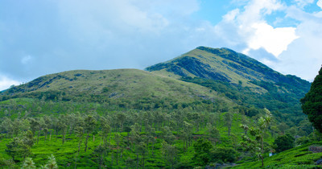
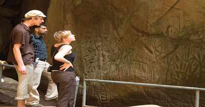

WAYANAD TOURISM ATTRACTIONS

Wayanad, which is also known as the ‘green paradise’ lies in between the mountains of the Western Ghats. It is called the ‘green paradise’ because it forms the border of the greener portion of Kerala. It lies at a distance of 76 km from Kozhikode. Wayanad district is located on the southern tip of the Deccan plateau and in the north-eastern part of Kerala. It is at a short distance from popular tourist destinations like Ooty, Kannur, Bangalore, Mysore and Coorg.
BANASURA SAGAR DAM

CHEMBRA PEAK
EDAKKAL CAVES
KURUVA ISLAND

MUTHANGA WILD LIFE SANCTUARY